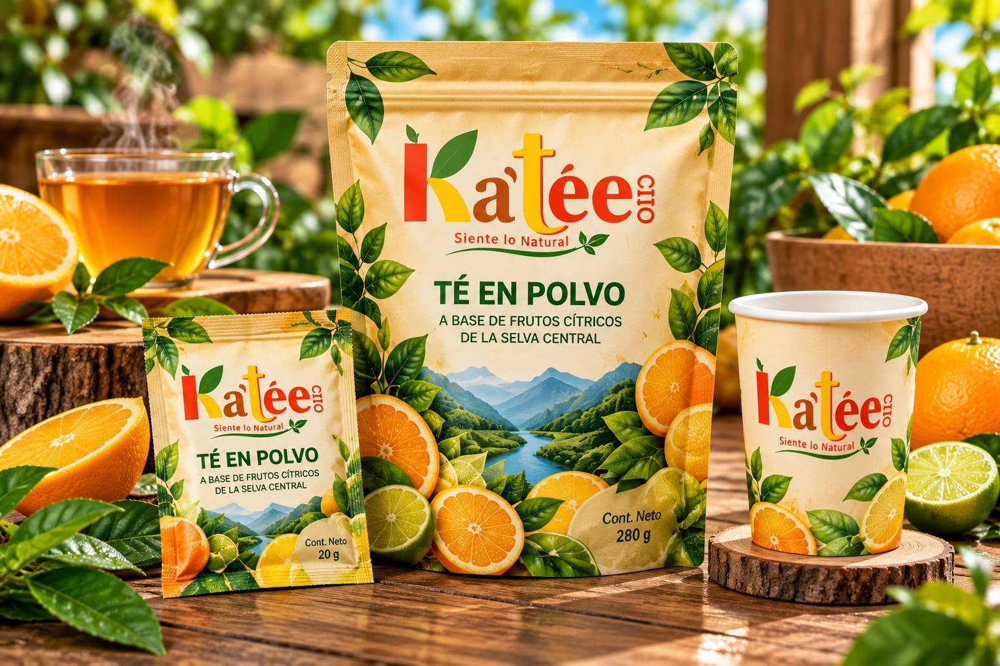
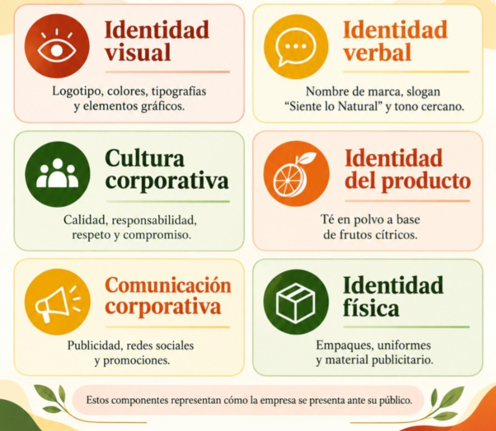

Percepción del cliente
Cómo el público interpreta y recuerda la experiencia con la marca.
Información organizada de imagen institucional.
Cómo el público interpreta y recuerda la experiencia con la marca.
Posibilidad de conectar con consumidores que buscan nuevas experiencias de sabor. Aspectos positivos que aportan valor y diferenciación.
Oportunidades para fortalecer la presencia de la marca.

Lo que el público conoce y recuerda de la marca.
Las emociones y sensaciones que genera la marca.
La disposición del público a elegir, recomendar o consumir sus productos.
La imagen también puede analizarse desde las dimensiones comercial/de producto, financiera, social/ciudadana, interna/laboral e institucional/corporativa.
